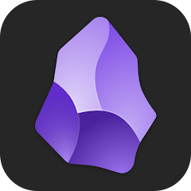

アイウエオ
AIUEO INC. / FREE ONLINE SEMINAR
AI社員を1人雇うと、
なぜ作業が消えて
売上が残るのか
なぜ作業が消えて
売上が残るのか
AIO Marketing OS で集客・営業・制作を
仕組み化する90分
仕組み化する90分
90分 / 無料 / ONLINE LIVE
SEMINAR PRESENTATION DECK
アイウエオ
INTRODUCTION
まず、改めて
自己紹介します
自己紹介します
株式会社アイウエオ / Speaker Introduction
SPEAKER
A
代表 / 登壇者
AIUEO Inc.
AIマーケティング支援
AIO Marketing OS 開発
AI社員を使って、自分たちの仕事を仕組み化してきました。
事業
AIマーケティング支援。集客・営業・制作の仕組み化が専門。
導入企業
12社へAI社員を導入（すべて架空前提）。
平均効果
1社あたり月40時間の作業を手放した。
アイウエオ
本日の流れ
1先に「結果」を見る
2AI活用が単発で終わる理由
3「AI社員」を作る式
4AI社員の中身を分解する
5明日から動かす手順
1
まずは
結果で見てください
結果で見てください
PROOF BY RESULTS
AIO Marketing OS / Free Seminar
アイウエオ
不安な方もいると思うので
先に結果を見せます
アイウエオ
FIRST, SEE THE RESULTS
数字より先に、
出ている結果から
出ている結果から
PROOF
BEFORE METHOD
BEFORE METHOD
12社
AI社員 導入企業
月40h
手放した作業時間／社
8週間
仕組みが立ち上がる期間
集客→制作
一気通貫の導線
好評
受講後アンケート
この資料
AI社員が下書き制作
アイウエオ
OUTPUT SAMPLE / LANDING PAGE
集客LPも、
AI社員の仕事です
AI社員の仕事です
原稿・構成・デザイン指示まで一気通貫。人がやったのは方向性の確認だけ。これが「作業が消える」状態です。

2
AI活用が
単発で終わる理由
単発で終わる理由
WHY IT DOESN'T STACK
アイウエオ
COMMON PAIN
こんな状態、心当たりありませんか
毎回ゼロから書き直し
プロンプトを使い捨て。前の工夫が残らない。
品質がその日次第
同じ依頼でも出てくる物がバラバラ。
人が辞めると消える
ノウハウが個人の頭の中にしかない。
結局、自分でやる
教える手間のほうが大きく、AIを手放す。
アイウエオ
THE REAL PROBLEM
問題は、AIの賢さではありません。
同じ前提を、何度でも渡せる場所が
あるかどうかです。
同じ前提を、何度でも渡せる場所が
あるかどうかです。
アイウエオ
METAPHOR
いまの多くのAI活用は、
優秀な新人を毎朝雇い直している
優秀な新人を毎朝雇い直している
毎朝、雇い直す
賢いのに昨日を覚えていない。毎回ゼロから説明し直す。
引き継ぎノートを置く
前提・手順・成果物を1か所に残す。新人が一晩で戦力になる。
3
AI社員を
作る式
作る式
THE FORMULA
アイウエオ
THE FORMULA
AI社員 = ナレッジ × スキル × アウトプット
ナレッジ
会社の前提・事例・判断基準
×
スキル
仕事の手順・チェックリスト
×
アウトプット
成果物の型・お手本
3つを1か所に貯めると、毎回同じ品質で仕事が返ってくる。
4
AI社員の
中身を分解する
中身を分解する
INSIDE AN AI EMPLOYEE
アイウエオ
INSIDE / 3 LAYERS
中身は3層だけ。特別なツールは要りません


① 文脈を貯める
前提・事例・手順を1か所に。ローカルでも、いつものメモアプリでもいい。


② 考えて作る
貯めた文脈を渡して、AIに考えさせる。ここが「賢い新人」。

③ 成果物を出す
LP・資料・メール・請求書まで。型に沿って出力する。
アイウエオ
BEFORE / AFTER
作業が消えて、判断だけが残る
BEFORE
・毎回ゼロから説明
・品質がバラつく
・自分が抜けられない
・品質がバラつく
・自分が抜けられない
AFTER
・前提は一度渡すだけ
・品質が毎回揃う
・自分は確認と判断だけ
・品質が毎回揃う
・自分は確認と判断だけ
アイウエオ
OUTPUT SAMPLES
これ全部、AI社員が出した成果物です


提案デッキ案内メール請求書
アイウエオ
HONESTLY...
考え方は分かった。でも、
最初の一歩で止まる人が、ほとんどです
アイウエオ
COMMON QUESTIONS
先に、よくある不安に答えます
Q. 専門知識が要るのでは？
いいえ。今あるメモや議事録から始めて大丈夫です。
Q. 最初から完璧に作れない…
完璧は不要。使いながら追記していく前提のものです。
Q. 一人で続けられる自信がない
最初の設計だけ伴走できます。土台ができれば自走できます。
アイウエオ
OS
YOUR FOUNDATION
だから、土台を一緒に作る場を
用意しました。AIO Marketing OS
用意しました。AIO Marketing OS
8週間で、AI社員と「集客→営業→制作」の導線を作り切る。
アイウエオ
WHAT WE BUILD / 8 WEEKS
8週間で作り切るもの
① 文脈基盤
前提・事例・判断基準を貯める受け皿を構築
② AI社員チーム
集客・営業・制作の担当を部署として作る
③ 成果物の型
LP・資料・メール・請求書のお手本を整備
④ 売上導線
集客から制作・受注までを1本につなぐ
アイウエオ
この土台一式を、この価格で作りにいけます
AIO Marketing OS / 8週間プログラム
498,000円
税別 / 8週間伴走 + 土台一式
分割払い対応
8週間 伴走
まずは無料診断から
アイウエオ
FOUNDATION IS NOT ENOUGH
でも、土台だけでは
売上にはなりません
売上にはなりません
土台
AI社員が動く基盤
商品
売れる形にする
発信
届ける導線を作る
売上導線
買われる流れまで
だからAIO Marketing OSは、基盤からマーケ・売上導線までつなげます。
アイウエオ
質疑応答
気になること、なんでもどうぞ
どこから作る？
自分の業種でも使える？
AI社員の中身は？
無料診断って何をやる？
アイウエオ
FINAL STEP / 無料
まずは
無料診断を
予約してください
無料診断を
予約してください
30分。あなたの事業で「何から作るか」を一緒に整理します。申し込みを迫ることはしません。
無料診断を予約する
QR / 予約フォームから
example.com/aiueo-ai-marketing